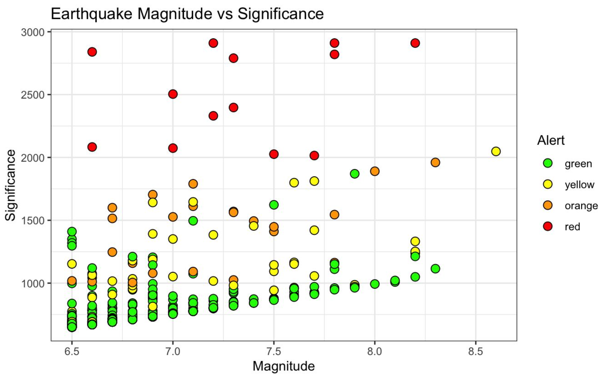
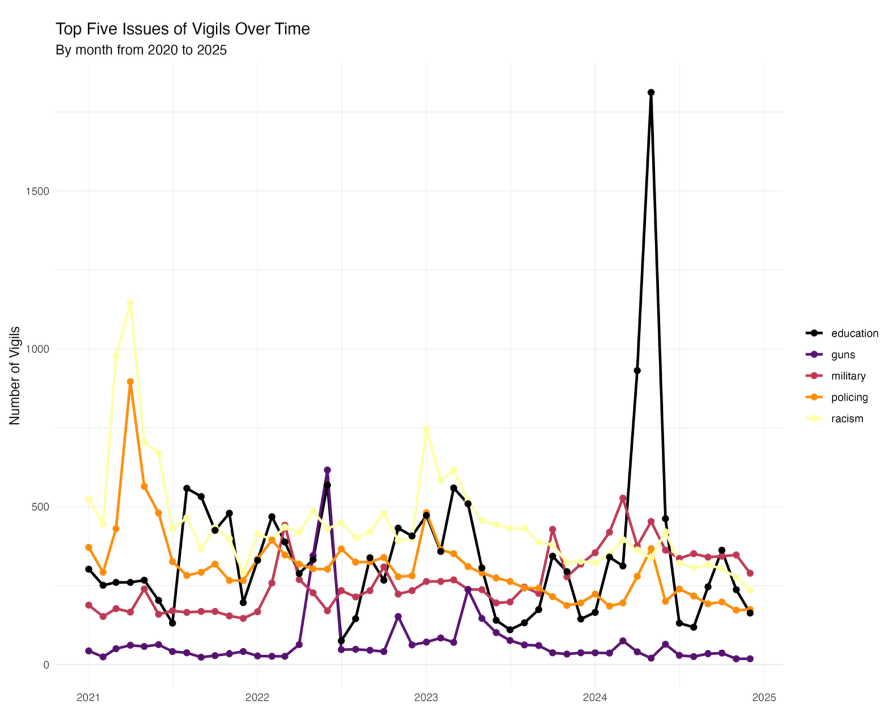
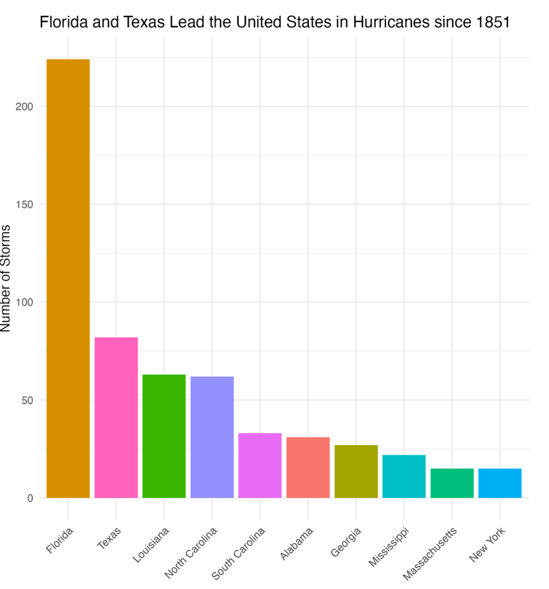

Projects
Predator-Prey Sheaf Modeling
Applied sheaf theory to analyze wolf and moose population dynamics using real-world ecological data. Evaluated model consistency and predictive performance using statistical techniques.
View Project →
Earthquake Magnitude Analysis
Analyzed 782 global earthquakes (1995–2023), exploring magnitude distributions and alert levels using statistical and visualization techniques.
View Project →
Vigil Protest Analysis
Explored patterns in U.S. vigil protests (2020–2024) using Crowd Counting Consortium data, uncovering insights through data visualization and analysis.
View Project →
US Hurricanes Analysis
Analysis of hurricanes in the US since the 1850s looking at possible storm developing conditions.
View Project →Numerical Model of Sediment Mercury Transport during Huricane Harvey
Undergraduate research with the Virginia Institute of Marine Science, titled "Modeled Redistribution of Mercury Mobilized from Different Sources within Upper Galveston Bay during Hurricane Harvey." (No code available)
View Project →